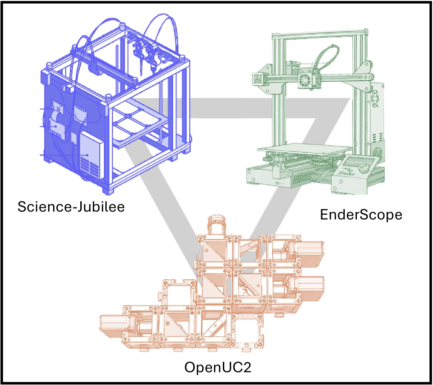

Abstract
Science laboratories are usually equipped with closed-source instruments maintained by manufacturers. They often require external intervention for maintenance, upgrade, and, when possible, modification. This helps guaranteeing the reliability of the results acquired with them, even by non-specialised users.
Yet, state-of-the-art advances quickly and laboratories continuously develop new methods and techniques that will take time and favourable circumstances to be adopted by manufacturers. During this gap period, enabling scientists to replicate those developments in their own laboratories is very valuable. Modular scientific open-hardware libraries allow for this possibility: they provide modifiable tools to implement, with a low-entry barrier, methods and techniques that may not be available for purchase. Furthermore, by providing an access to the control of the hardware, they allow to naturally expand the level of control on the instrument and implement automation of protocols and data acquisition. That way, large datasets can be generated in a reproducible and trackable way compatible with FAIR guidelines (see for example: Altar data management).
In this workshop, we will bring together actors of different open-hardware modular projects for science (Science Jubilee, OpenUC2 and EnderScope) and discuss the developer and user experience. One objective is to identify the mechanisms that are well-adopted by users and communities and evaluate their transferability across projects. We will also build the adaptor modules that allows bridging the gap between those modular platforms.
The workshop will take place at ENS campus Montrouge, combining hands-on prototyping sessions at QLab with a public seminar where each project is presented and workshop outcomes are discussed.
Registration is required to attend, including for the public seminar on Friday.
Register now